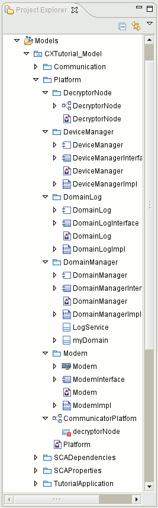
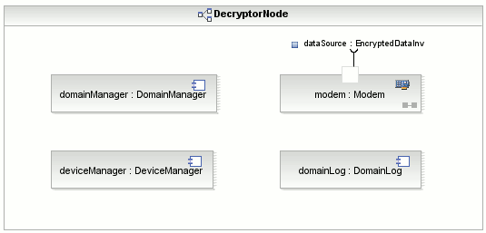
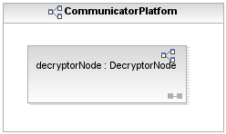

Tutorial 3: Platform Development
This tutorial builds on Tutorial 1 and Tutorial 2. In this tutorial, you will
learn some more advanced skills and concepts. You will learn about:
- devices
- allocation properties
- nodes
- device managers
- domain managers
This tutorial assumes you have completed Tutorial 1 and Tutorial 2.
Open the project and model
In Tutorial 2 you created the following elements:
- an assembly controller
- property types and SCA attributes
- a monolithic implementation
- monolithic implementation dependencies
- a freestanding port
In the Project Explorer expand the project and model you developed Tutorial 2.
Create a device
The platform is divided into: devices, nodes, and platforms.
A device is an abstract software representation of a physical hardware element. Devices are the software view of the hardware element. These elements,
allow a platform independent SCA model to include the platform view. Devices are very similar to components - you must configure the device's interfaces and ports.
- In the Project Explorer, select CXTutorial_Model and create a new package called Platform.
- Right click on the Platform package and from the popup menu, select Add CX > Component.
- Name the device Modem and set the Type to ExecutableDevice. Click Finish.
- Add processor and OS dependencies from the SCADependencies diagram to the
Modem diagram. Using the Palette, draw OS and Processor links.
- Validate the Modem package and correct any errors.
Create ports on the device interface
This is done the same way as you did on the component interface. You will reuse the portTypes you created when adding ports to component interfaces.
- Open the Modem diagram.
- In the Palette, select Port and drop it onto the ModemInterface component interface.
- From the menu, select Existing Element and search for EncryptedDataInv. Select
<<PortType>> EncryptedDataInv and name the port dataSource.
- Select the dataSource port and in the Properties View > SCA
tab and set kind to data.
Define Executable Device SCA properties
This is similar to defining the SCA properties on a component. An executable device has two properties: os_name and processor_name.
- Open Modem diagram.
- Right click on the Modem structure realization and from the popup menu, select Add CX >
SCA Property.
Name the property os_name.
- Select os_name and in the Properties View > SCA tab.
- Click Edit Type and choose os_name. Set the Value to Linux.
- Right click on the Modem structure realization and select Add CX > SCA Property.
Name the property processor_name.
- Select processor_name and in the Properties View > SCA tab.
- Click Edit Type and choose processor_name. Set the Value to x86.
- Save the model.
Define allocation properties
Allocation properties can be used to specify services from the device. For example, using allocation properties, you can define processing
power and throughput for the device. When you define allocation properties, you have to set the action property: when set to external, this
implies that the device manages the capacity using allocateCapacity and deallocateCapacity; any other setting indicates that the Core Framework
manages the capacity.
SCA properties in CX are elements and as such can be reused.
Create SCAPrimitives
- In the Project Explorer open CXTutorial_Model > SCAProperties > SCAPropertiesDiagram.
- In the Palette, select Primitive Property Type and drop this element onto the diagram.
- Name the element KIPS. In the Properties View > SCA tab.
- Set the following properties:
- Kind to Allocation
- Type to Ulong
- Action to Greater than or Equal
- Repeat this process for a second SCAPrimitive named Throughput. Set the following properties, for this
element:
- Kind to Allocation
- Type to Ulong
- Action to Greater than or Equal
Create SCA Properties and assign them
In this section you will create SCA properties for the Modem and then assign them to the SCAPrimitives you created and defined
above.
- Open Modem diagram.
- Right click on Modem structure realization and from the popup menu, select Add CX > SCA Property.
Name the attribute KIPS.
- Select KIPS and in the Properties View > SCA tab.
Click Select type and choose SCA Primitive KIPS. Set the Value to 50.
- Right click on the Modem structure realization and select Add CX > SCA Property.
Name the property Throughput.
- Select Throughput and in the Properties View > SCA tab.
Click Select type and choose SCA Primitive Throughput. Set the Value to 100.
Validate the Modem Device
To ensure you have not introduced any errors, right click on Modem, on the diagram or in the Project Explorer, and select SCA Validate. Correct any errors.
Create a node
A node is made of the set of devices under the control of a single Device Manager component. A node can contain one or more
devices and their connections. One of the devices in a node must be an executable device.
The concept of a node is introduced by CX. The SCA equivalent of a node is the DCD.
- Create a new package under the Platform package and name it DecryptorNode.
- Create a diagram in the DecryptorNode package called DecryptorNode.
- In the Palette, expand the SCA Platform drawer.
- Select the Node element and drop it on the diagram you created.
- Name the element DecryptorNode.
- Resize the node to make it large enough to contain the device.
- In the Project Explorer select Modem structural realization and drag it onto
DecryptorNode.
This creates a device instance on the node.- Resize and move the device instance as required.
Next you need to define a Device Manager, Domain Manager, File Manager, and Log for the node.
Core Framework elements
The SCA defines Core Framework elements that provide services to the application and platform:
- Domain Manager
- Device Manager
- File Manager
- Log
These elements need to be configured on the node. Each node requires a Device Manager and the entire platform requires one Domain
Manager. The File Manager and Log elements are optional.
These Core Framework elements are similar to components and devices - they have attributes and implementations.
Create a Device Manager
- In the Project Explorer, right click on the Platform package and from the popup menu, select Add CX
> Component.
- Name it, DeviceManager and set the Type to DeviceManager. Click
Finish.
- Add processor and OS dependencies from the SCADependencies diagram to the
DeviceManager diagram. Using the Palette, create OS and Processor links.
- Validate DeviceManager and correct any errors.
Create a Domain Manager
- In the Project Explorer, right click on the Platform package and from the popup menu, select Add CX >
Component.
- Name the CF element DomainManager and set the Type to DomainManager. Click Finish.
- Add Processor and OS dependencies from the SCADependencies
diagram to the DomainManager diagram. Using the Palette, create OS and Processor links.
- Validate DomainManager and correct any errors.
Next you must define the Domain Manager Descriptor for this Domain Manager. The Domain Manager Descriptor describes the services the Domain
Manager connects to during startup.
- In the Palette, expand the SCA Platform drawer.
- Select the Domain element and drop it onto the DomainManager diagram you have been using.
- Change the name to myDomain.
- In the Palette, select the Domain Dependency and link from myDomain to
DomainManager. You can delete the label from this association if you want to.
- In the Palette, select the DMD Service and drop this element onto the diagram.
- Name this element LogService.
- In the Palette, select the DMD Service Link and link from myDomain
to LogService.
- In the diagram, select LogService.
- In the Properties View > SCA tab and configure the following mandatory properties:
- FindBy Name to domainLog
- FindBy Type to DomainFinder_Log
- Uses Identifier to log
- Save the model.
Create a Log Service
- In the Project Explorer, right click on the Platform package and from the popup menu, select Add CX >
Component.
- Name the service DomainLog and set the Type to Log. Click Finish.
- Add processor and OS dependencies from the SCADependencies diagram to the
DomainLog diagram. Using the Palette, draw OS and Processor links.
- Validate DomainLog and correct any errors.
Add Core Framework elements to the node
Now that you have created the elements and requirements of the node, you must now add them to the node.
- In the Project Explorer, select the DomainManager structure realization and drag it onto the DecryptorNode diagram.
- Repeat for the Device Manager.
- Repeat for the DomainLog.
- Resize and move the DecryptorNode parts as desired.
Configure the node
The node has attributes that need to be defined. CX automatically determines the Device Manager for the node and updates appropriately. Using the namingservice
property, you need to define the Domain Manager.
- Open the DecryptorNode diagram.
- Select DecryptorNode.
- In the Properties View > SCA tab.
- Configure the Naming Service property to be the myDomain/DomainManager. This tells the Node how to find the
DomainManager in the NamingService.
- Save the model.
Validate the node
Validation will ensure that you haven't missed anything or introduced any errors to the node.
- In Project Explorer, select the DecryptorNode and from the right-click menu select SCA Validation.
- If errors are returned, navigate to the error source and debug.
Define the platform
A platform is a set of nodes under the control of a single domain manager. A platform can contain one or more nodes,
A platform is a modeling entity introduced by CX. The SCA equivalent of the platform is the entire set of DCDs that comprise the
Domain.
- Create a new diagram under the Platform package and name it Platform.
- In the Palette, expand the SCA Platform drawer.
- Select the Platform element and drop it onto the diagram.
- Name the element CommunicatorPlatform.
- Resize the element so it will hold the node.
- In the Project Explorer, select the DecryptorNode you created and drag it onto the CommunicatorPlatform.
- Validate CommunicatorPlatform and correct any errors.
- Validate the Platform package and correct any errors.
- Save your model.
Tutorial Summary
In this tutorial you learned about the next step of model driven development: platform definition and creation. You became familiar with the elements in the
SCA Platform drawer and learned more about defining dependencies and attributes. As well you saw how you can re-use elements multiple times.
In the Tutorial 4: Finalizing the Model, you will learn about dependencies and freestanding ports.
The following images illustrate what your application and model should look like in Spectra CX:


